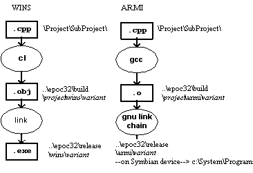

|
| |
An EXE program typically has a single executable component. Unlike GUI application targets there is no application information file, and in most cases a resource file will not be needed.
The toolchains used to deliver EXE project in WINS and ARM are shown below:

EXE target build process
Under WINS, the C++ source is compiled to object files in the build directory; these are then linked — together with standard libraries — into the release directory. You may run the program directly from the release directory.
Under ARMI, the C++ source is compiled using GNU C++, and then linked using various tools from GNU and from Symbian into a .exe in the release directory. These tools ensure that all Symbian executables are of the minimum possible size. You may then transfer the program to the target machine, using Symbian Connect or similar software, and execute it.
The build process hides this complexity—see the linked topic below. The following section discusses the special configuration issues associated with building for EXE targets.
How to use the Symbian build process
For an EXE target, only a minimum of essential information need be specified:
Specify the TARGETTYPE line as:
TARGETTYPE exe
Specify the UID as zero in a UID line:
UID 0
EXEs do not strictly speaking need a UID value. However specifying zero suppresses a makmake warning.
An example of the makmake project file for a text console version of the HelloWorld application is given below — HelloWorld.mmp.
TARGET HelloWorld.exe
TARGETTYPE exe
UID 0
SOURCEPATH .
SOURCE HelloWorld.cpp
USERINCLUDE .
USERINCLUDE ..\CommonFramework
SYSTEMINCLUDE \Epoc32\include
LIBRARY euser.lib
Copyright ©2002 Symbian Ltd. 6.1-00174 |
|